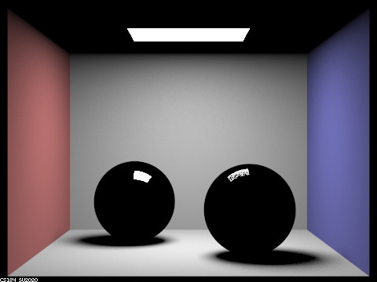

Overview
In this project, we added additional support for glass, mirror, and microfacet materials.
In part 1, we implemented reflect and refract functions and used them to implement the bsdf for glass and
mirror
materials. In part 2, we built support for microfacet materials by calculating the Fresnel Term, NDF, and
Beckmann NDF.
Part 1: Mirror and Glass Materials
|
|

|
|
|
|
|
|
|

|
- m = 0: Only the light source can be seen.
- m = 1: Lights bounces off from the walls and the balls. So now the walls are lit and we can see reflections of the light source on the balls.
- m = 2: We can see the mirror effects now. The path of the lights would be light source -> object -> mirror surface -> camera, which is exactly 2 bounces. The shadows are also softer since indirect illumination takes effect now.
- m = 3: We can see the refraction effects now. The path of the lights would be light source -> object -> entering surface of the glass -> exiting surface of the glass -> camera.
- m = 4: We can see the refraction effects of the right ball in the mirror reflection of the left ball now. The path of the lights would be light source -> object -> entering surface of the right glass ball -> exiting surface of the right glass ball -> mirror surface of the left ball -> camera. We can also see a small lit area on the wall. The light path would be light source -> mirror surface of the left ball -> entering surface of the right ball -> exiting surface of the right ball -> wall -> camera, which is 4 bounces.
- m = 5: There is a tiny bright dot appeared in the mirror reflection(on the left ball) of the right ball near the center of the reflected image of the right ball. The light path would be light source -> mirror surface of the left ball -> entering surface of the right ball -> internal reflection inside the right ball -> exiting surface of the right ball -> mirror surface of the left ball -> camera.
- m = 100: Not much change.
Part 2: Microfacet Material
Dragon
|
|
|
|
|
|
As alpha increases, the dragon becomes less glossy and more matte.
Bunny
|
|
|
Importance Sampling produces much less noise.
Silver Material
We looked up the eta and k values of silver.eta = 0.059193, 0.059881, 0.047366
k = 4.1283, 3.5892, 2.8132.